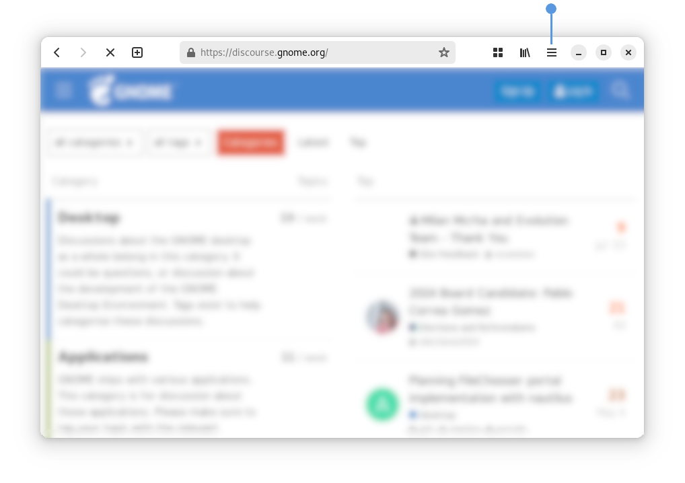

How to reinstall a Webapp
Software supports managing two types of web apps:
The first type are displayed as available to install in Software (when this functionality has been enabled by the distribution), whereas the second type only show up in Software after they have been installed via GNOME Web. If you uninstall such an app and want to reinstall it, you must do so using GNOME Web.
Here are the steps to install a web app using GNOME Web:
Click the app Menu button in the top right as shown in the image below.
Click on Install as Web App… menu item. This should open the web app creation dialog.
Click the Create button to create and install the web app.

The web app should now show up in Software’s Installed tab.